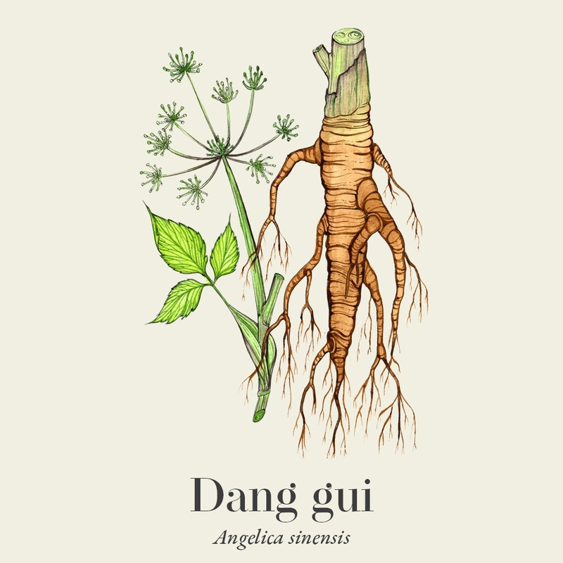
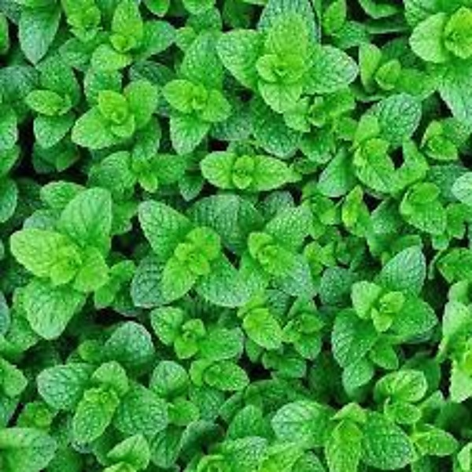
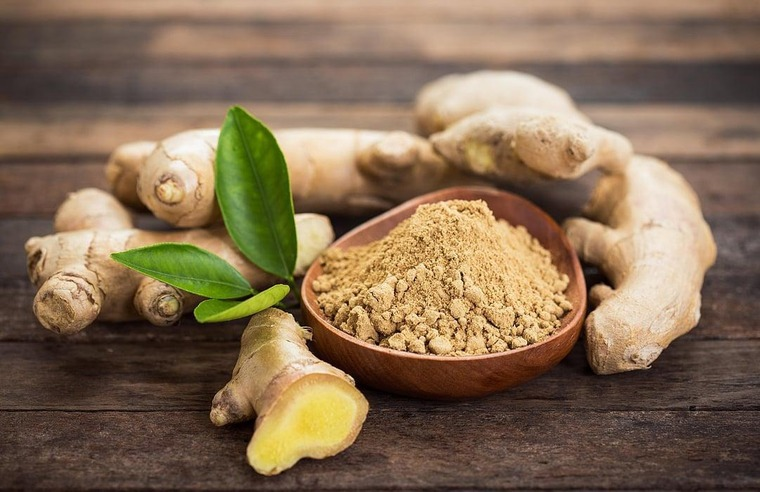
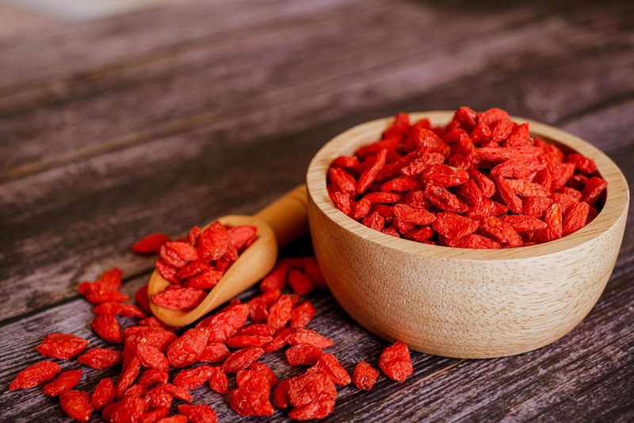

Herbal Medicine
My Top 5 Favorite Chinese Herbs
By Mia Windman · March 19, 2026 · 5 min read
By Mia Windman · March 19, 2026 · 5 min read
By Mia Windman, UCLA Biochemistry graduate and current student at Wongu University of Oriental Medicine
Even before becoming a student of Traditional Chinese Medicine, I've always been interested in natural ways to support my health. Over time and during my herbology classes, I've discovered a few Chinese herbs that I keep coming back to. Whether it's for relaxation, energy, or overall wellness, these herbs have become part of my routine. Here are my top five favorites and why I love them.
Dang Gui is often called the "female ginseng," and it's known for its anti-inflammatory properties. It generates blood, supports blood circulation, and supplements overall balance in the body. Dang Gui can help with PMS symptoms as well as irregular menstruation for women with PCOS or Endometriosis. I like it because it feels deeply nourishing and more gentle compared to Ginseng (Ren Shen), and is often used when the body needs a little extra care and restoration.
There are also studies which show it has an anti-cancer and immunity boosting effect.[1]
Caution: Consult your practitioner if you are already on blood thinning medication.

Dang Gui — Angelica sinensis
Bo He has a fresh, cooling effect and is part of the TCM category of Cool, Acrid Herbs that Release the Exterior. Whenever I feel overheated in the hot Las Vegas weather or stressed during finals week, this is one of my go-to herbs. I also drink Bo He tea after eating greasy or spicy food, as it is a main ingredient in herbal formulas for summer heat causing abdominal pain.
It's also great for soothing headaches or a scratchy throat, and the minty aroma alone is invigorating.[2]

Bo He — Mentha haplocalyx
Corn silk tea is one of those underrated remedies that deserves more attention. It has a very mild taste and is known for supporting liver, gallbladder, kidney, and urinary health. I usually drink corn silk tea after eating a greasy or sugary meal to prevent a sugar crash, as research indicates it may help with blood sugar control.
One meta-analysis of studies showed that “CST plus antihypertensive drugs could be more effective on lowering blood pressure than conventional antihypertensive drugs alone, accordingly suggesting CST may be a new alternative natural-based treatment for hypertension.”[3] There is also another study which states that the “results confirmed the traditionally claimed benefits of corn silk on DM [Diabetes Mellitus], which suggested that the corn silk possessed the anti-diabetic potential and could be further developed as a cheap and plant-derived agent for the treatment of type 2 diabetes mellitus.”[4]
Although I don't personally have high blood pressure or diabetes, I've recommended this tea to several family members who do — and they've given it glowing reviews!
Yu Mi Xu — Stigma Maydis (Corn Silk)
Ginger is a staple in my kitchen and my wellness routine. It helps with digestion, warms the body, and is perfect when I feel like I might be getting sick. I drink a simple tea of freshly grated ginger and turmeric every morning during winter to stimulate digestion and warm the body. I also use ginger for its anti-inflammatory effect.[5]
Many of my staple family recipes also include ginger, making it an inexpensive and easy way to support overall wellness, immune system function, and digestion.

Sheng Jiang — Zingiber officinale (Ginger)
Goji berries are small but packed with nutrients and antioxidants. I love adding them to my herbal teas, eating them with my oatmeal, or even snacking on them mid-day as a pick-me-up. They're known for nourishing the liver and kidney, supporting eye health, and boosting overall vitality — which makes them an easy everyday addition.[6]

Gou Qi Zi — Lycium barbarum (Goji Berries)
These herbs are part of what helps me feel balanced and healthy day to day. What I like most is how simple they are to use — whether in teas or as food, they are small, easy additions to a daily routine. Natural remedies don't have to be complicated to be effective, and consistency is the key to better health.
Our licensed OMDs can create a custom herbal prescription tailored to your specific health needs. Initial consultations start at $120.